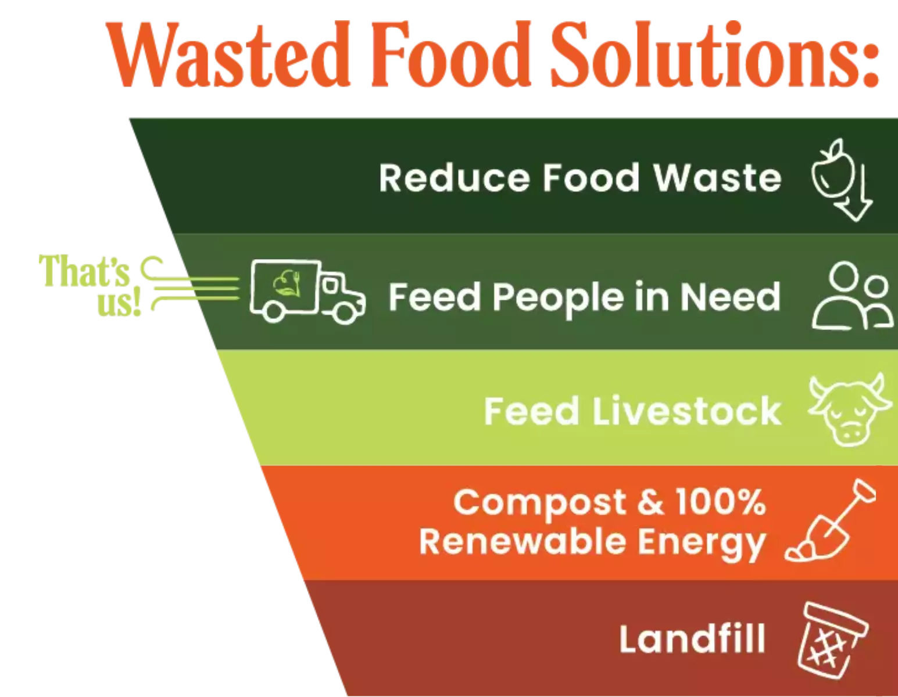

How to Reduce Food Wastage
Implementing simple habits can help reduce food waste and make a big difference.
1. Meal Planning
Plan your meals in advance to avoid over-purchasing. Make a shopping list and stick to it to prevent buying unnecessary items.
2. Proper Food Storage
Store food correctly to extend its freshness. Keep fruits and vegetables in separate compartments and refrigerate perishables.
3. Use Leftovers
Reuse leftovers creatively instead of throwing them away. Incorporate them into new meals to minimize waste.
4. Portion Control
Serve appropriate portion sizes to reduce plate waste. Start with smaller servings, and take more if needed.
5. Donate Excess Food
Donate non-perishable items and safe-to-eat leftovers to local food banks or shelters to support those in need.
Summary of Solutions
| Solution | Description |
|---|---|
| Meal Planning | Helps avoid unnecessary purchases and reduces the likelihood of food going bad. |
| Proper Food Storage | Extends food life by keeping items in optimal conditions. |
| Use Leftovers | Minimizes waste by repurposing remaining food into new meals. |
| Portion Control | Reduces plate waste by serving manageable amounts. |
| Donate Excess Food | Helps support the community by donating edible food to those in need. |
